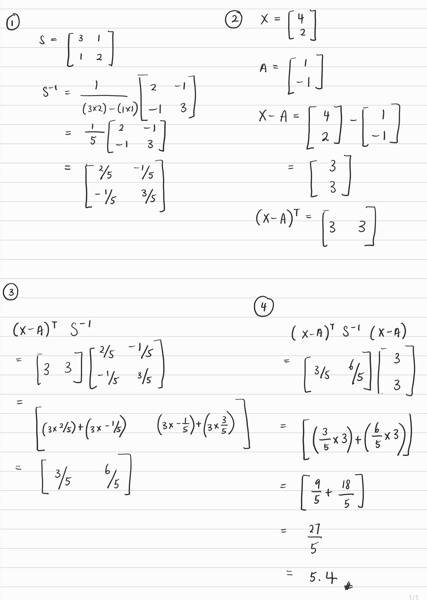
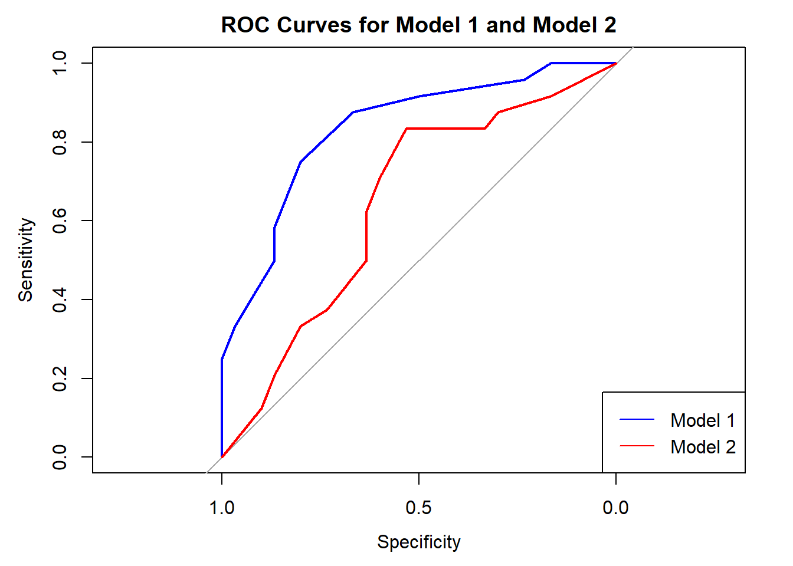
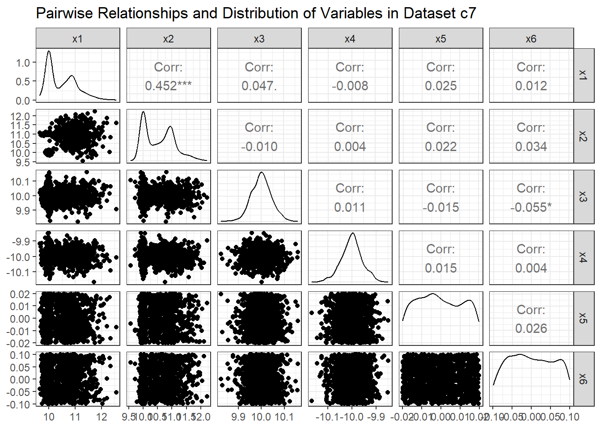
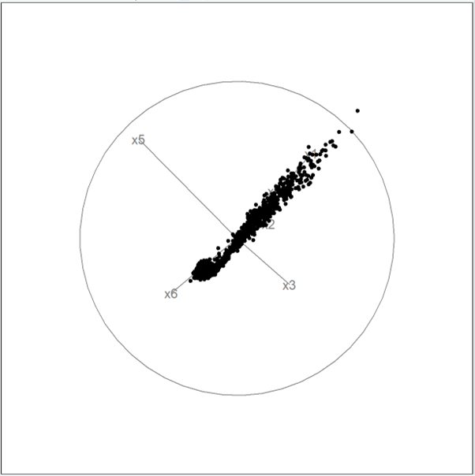
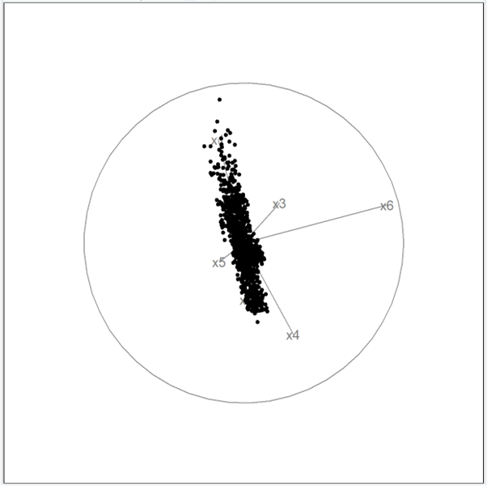
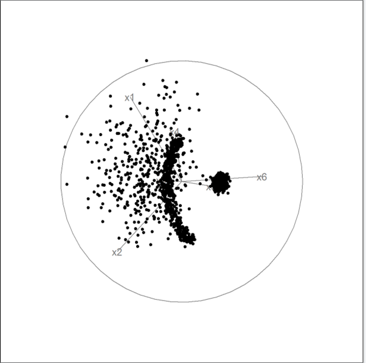
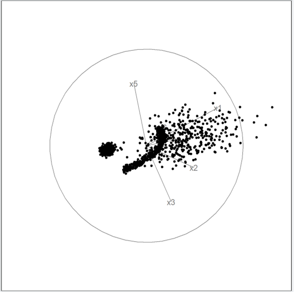
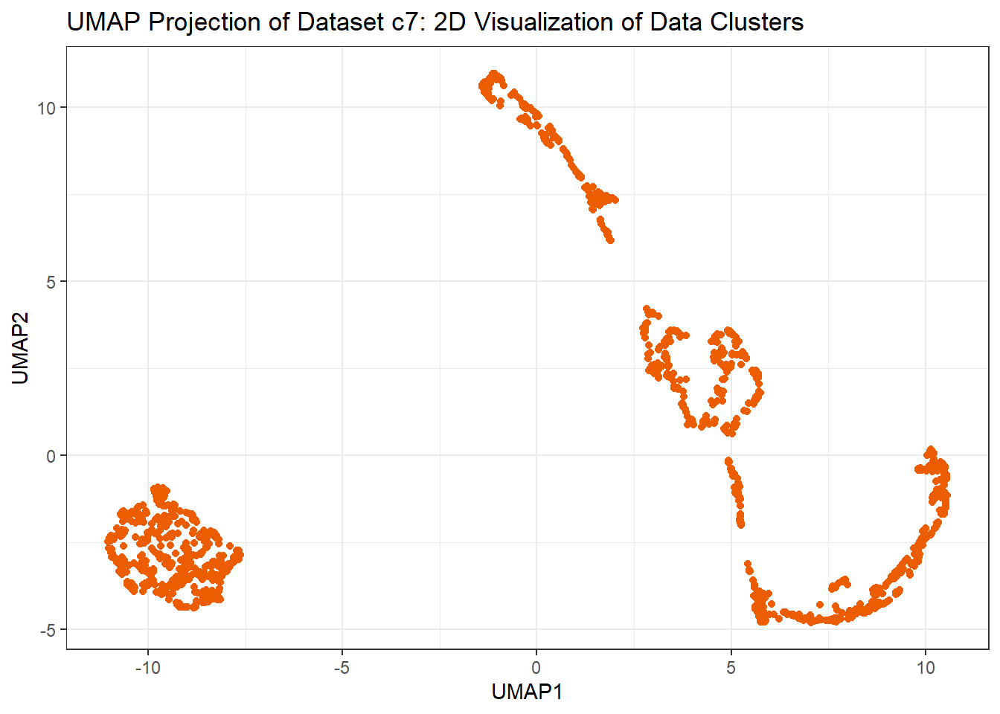
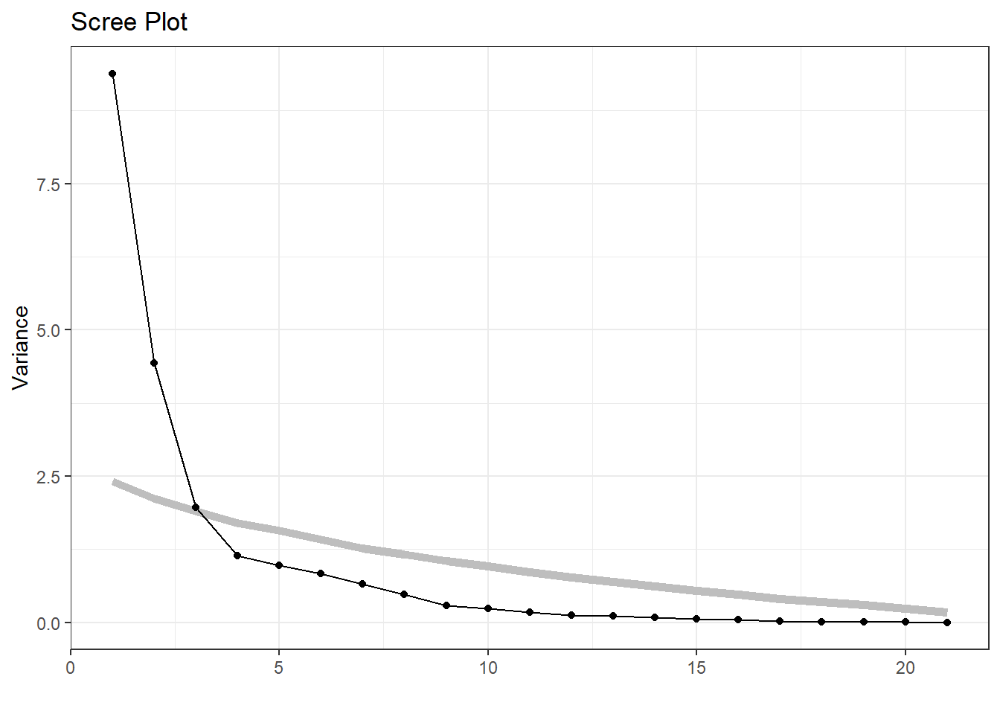
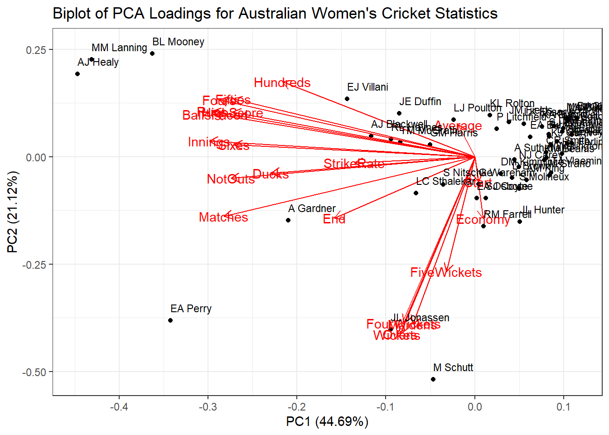

ETC3250/5250 Assignment 1
Exercises
1. Basic math and computing (5pts)
The handwritten answer to \[(X-A)^\top S^{-1} (X-A)\] is shown as below:
To compute it numerically using R code, we can do as below:
S <- matrix(c(3, 1, 1, 2), nrow = 2, byrow = TRUE)
X <- matrix(c(4, 2), nrow = 2)
A <- matrix(c(1, -1), nrow = 2)
# Inverse of S:
S_inv <- solve(S)
# Compute (X-A)^T S^(-1) (X-A):
answer <- t(X-A) %*% S_inv %*% (X-A)
cat("The answer is:", answer)The answer is: 5.42. ML concepts (8pts)
# A tibble: 3 × 7
y pred1 pred2 bilby1 bilby2 quokka1 quokka2
<chr> <chr> <chr> <dbl> <dbl> <dbl> <dbl>
1 bilby bilby bilby 0.8 0.8 0.2 0.2
2 bilby bilby bilby 0.9 0.51 0.1 0.49
3 bilby bilby bilby 0.9 0.6 0.1 0.4 Compute the accuracy and balanced accuracy for each model.
In model 1, the accuracy is 0.778 while the balanced accuracy is 0.775.
In model 2, the accuracy is 0.63 while the balanced accuracy is 0.629.
Model 1:Accuracy: 0.778 Balanced Accuracy: 0.775 Model 2:Accuracy: 0.63 Balanced Accuracy: 0.629 The class predictions were made by using 0.5 and above as the value at which to predict the observation to be a bilby. Compute sensitivity and 1-specificity if (i) 0.3 and (ii) 0.4 were used instead of 0.5.
For Model 1:
If 0.3 is used, the sensitivity is 0.958 while the 1-specificity is 0.767.
If 0.4 is used, the sensitivity is 0.917 while the 1-specificity is 0.5.
For Model 1:Threshold = 0.3Sensitivity: 0.958 1 - Specificity: 0.767 Threshold = 0.4Sensitivity: 0.917 1 - Specificity: 0.5 For Model 2:
If 0.3 is used, the sensitivity is 0.833 while the 1-specificity is 0.667.
If 0.4 is used, the sensitivity is 0.833 while the 1-specificity is 0.467.
For Model 2:Threshold = 0.3Sensitivity: 0.833 1 - Specificity: 0.667 Threshold = 0.4Sensitivity: 0.833 1 - Specificity: 0.467 Make the ROC curves for both models, where bilby is considered the positive class, and explain which is the better of the two.
The AUC (area under the curve) represents the probability that the model will rank a randomly chosen positive instance higher than a randomly chosen negative one. A higher AUC indicates better performance in distinguishing between the positive and negative classes. Therefore, the model with the higher AUC is considered better.
In this case, as Model 1 has a higher AUC (0.8354) than Model 2 (0.6451), we can conclude that Model 1 performs better in terms of discrimination ability between positive and negative instances, assuming that bilby is considered as the positive class.

Area under the curve: 0.8354Area under the curve: 0.64513. Visualisation (8pts)
Scatterplot Matrix
The scatterplot matrix reveals significant clumping of data points across multiple variable pairs. This clumping suggests regions of higher density or aggregation of data points, which may indicate possible underlying patterns or structures in the data.
However, based on the scatterplot matrix alone, there is no clear presence of well-defined clusters in the data. While clumps of data points are evident, the boundaries between these clumps are not clearly delineated, suggesting that the data points may belong to overlapping groups rather than distinct clusters.
Additionally, certain outliers are identifiable in the scatterplot matrix. Notable outlier pairs include:
- In variable pairings involving x1, outliers are observed with respect to variables x3, x4, x5, and x6.
- In variable pairings involving x2, outliers are noticeable with respect to variables x3 and x4.
- Outlier behavior is also observed in the pairing between x4 and x6.

Tour
According to the tour animation, the data points appear to exhibit linear patterns of movement at certain times. For instance, in some configurations, the data points seem to move along straight lines and align in a linear arrangement as the projection changes. This suggests potential linear relationships/associations between variables in the data.
One reason why linear patterns are revealed in the animation is because in the tour, variables interact dynamically as the projection changes, potentially revealing hidden linear relationships or interactions between variables. Unlike scatterplot matrices, which only show pairwise relationships, the tour animation can capture higher-order interactions contributing to linear patterns in the data. Additionally, the tour explores high-dimensional space by continuously projecting it onto lower-dimensional subspaces. This exploration can reveal linear relationships or patterns not apparent in static scatterplot matrices, which show pairwise relationships in a two-dimensional grid that may not fully capture the complexity of higher-dimensional relationships.
A few outliers are also noticeable at certain projections, indicating data points that deviate significantly from the overall linear trend. These outliers may represent anomalies or unique characteristics in the data.
In contrast to the scatterplot matrix where no obvious clusters were identifiable, the tour animation now reveals the presence of two distinct clusters. The larger cluster exhibits data points arranged in a concave shape, spread out across the projection space. In contrast, the smaller cluster appears more compact and tightly clumped together. This observation suggests a multi-modal distribution within the data, with one cluster displaying a broader dispersion and the other forming a more densely packed group.
These distinct clustering patterns highlight the complexity and multi-dimensional nature of the data, indicating potential underlying structures that may not be apparent in traditional scatterplot visualizations.
Linear Patterns & Outliers


Clusters


2D View provided by UMAP (Non-Linear Dimension Reduction)
Based on the UMAP projection of the data on a 2D space, it is evident that the data has separated into two distinct clusters, but they exhibit noticeable differences in their appearances. One spherical-shaped cluster appears more compact and tightly grouped, predominantly located at the bottom left of the plot. On the other hand, the second cluster appears more spread out and elongated, particularly towards the right side of the plot. It is difficult to ascertain whether the data points in the extended region (i.e. for the second cluster) truly belong to the same larger cluster or if they represent a separate grouping entirely.
The variability in the spread of data points within the second cluster could be attributed to the differing variances of the 6 variables from the c7 dataset. This is because when variables have different variances, it suggests that they may contribute unequally to the overall spread of the data. As a result, variables with higher variances may exert more influence on the positioning of data points in the UMAP projection, leading to clusters with varying shapes and extents, as observed in the elongated cluster.
Therefore, it is reasonable to infer that the data points within the compact cluster located at the bottom left likely share common characteristics or exhibit strong similarity. This is evident from the close proximity of data points within this cluster and their reduced dispersion. In contrast, the elongated cluster towards the right side of the plot displays greater dispersion among its data points. This increased dispersion may be attributed to higher variability across the dataset, suggesting a wider range of values and potentially less uniform characteristics among the data points within that cluster.
Additionally, one reason why clusters are more apparent in the UMAP projection is because UMAP is a dimensionality reduction technique which preserves local and global structure in the data, and aims to map high-dimensional data onto a lower-dimensional space while retaining meaningful relationships between data points. Hence, this allows for the visualization of distinct groupings within the data whereby in this case, it is evident that there is a clear distinction between the two groups of data points.
Meanwhile, scatterplot matrices are limited to pairwise comparisons and may overlook higher-order interactions or groupings.

4. Dimension reduction (15pts)
Based on the summary of the PCA conducted on the Australian women’s cricket data, we can see that the first few principal components (i.e. PC1, PC2, PC3, PC4) tend to capture the majority of the variation in the data. In this case, PC1 alone explains 44.69% of the variance, while the first five PCs cumulatively explain approximately 85% of the total variation. The summary of the PCA analysis also shows 21 principal components in total, which matches the total number of variables in our dataset after removing the non-numeric variable (i.e. ‘Player’).
Importance of components:
PC1 PC2 PC3 PC4 PC5 PC6 PC7
Standard deviation 3.0633 2.1061 1.40160 1.06832 0.98368 0.91350 0.8068
Proportion of Variance 0.4469 0.2112 0.09355 0.05435 0.04608 0.03974 0.0310
Cumulative Proportion 0.4469 0.6581 0.75162 0.80597 0.85205 0.89178 0.9228
PC8 PC9 PC10 PC11 PC12 PC13 PC14
Standard deviation 0.69476 0.53627 0.48002 0.41595 0.35399 0.32491 0.29751
Proportion of Variance 0.02299 0.01369 0.01097 0.00824 0.00597 0.00503 0.00421
Cumulative Proportion 0.94577 0.95946 0.97043 0.97867 0.98464 0.98967 0.99388
PC15 PC16 PC17 PC18 PC19 PC20 PC21
Standard deviation 0.23854 0.20395 0.1298 0.07883 0.06572 0.04946 0.01253
Proportion of Variance 0.00271 0.00198 0.0008 0.00030 0.00021 0.00012 0.00001
Cumulative Proportion 0.99659 0.99857 0.9994 0.99967 0.99988 0.99999 1.00000Based on the proportion of total variance explained by each principal component (PC), using 4 PCs is the most appropriate. This is because by doing so, it allows for the cumulative explanation of approximately 80% of the total variation.
This is further validated by the Scree plot, as the part where the plot flattens out (i.e. the “elbow”) also occurs at 4 principal components.

According to the summary of the first five principal components, the variables “Matches”, “Innings”, “NotOuts”, “Runs”, “HighScore”, “BallsFaced”, “Hundreds”, “Fifties”, “Ducks”, “Fours” and “Sixes” have the highest absolute loadings along PC1. This suggests that these variables play a significant role in defining the direction of PC1 and contribute the most to the variability explained by PC1.
Similarly, for PC2, the variables “End”, “Overs”, “Maidens”, “Wickets”, “Economy”, “FourWickets”, and “FiveWickets” exhibit the highest absolute loadings along PC2. This indicates that these variables are most strongly associated with PC2 and contribute substantially to the variation explained by PC2.
PC1 PC2 PC3 PC4 PC5
Start 0.004640568 -0.06186678 -0.6188648500 0.407365602 -0.030969786
End -0.167029252 -0.15162206 -0.4965650204 0.257421459 0.078745932
Matches -0.299003786 -0.14719118 0.0489773624 -0.049146442 0.064855998
Innings -0.316291688 0.03929534 0.0819215988 -0.054090328 0.094677669
NotOuts -0.290448140 -0.05284542 0.0330736681 -0.161322955 0.134071193
Runs -0.312986321 0.11241772 0.0424067864 0.018704522 0.072584541
HighScore -0.288867613 0.11094749 -0.0225676090 -0.131958216 -0.061455132
Average -0.019985523 0.07919181 -0.3924808812 -0.497141538 -0.151842427
BallsFaced -0.309657497 0.10528165 0.0628019321 -0.010200966 0.112386552
StrikeRate -0.143552460 -0.01510663 -0.3301909284 -0.380655938 -0.456371260
Hundreds -0.229512347 0.18497116 -0.0143318772 0.241646839 0.058889911
Fifties -0.287515259 0.14334344 -0.0004836872 0.144729471 -0.071070086
Ducks -0.242695881 -0.04000158 0.1234560594 0.009781488 -0.065265093
Fours -0.304788695 0.14105468 0.0167105422 0.086544202 0.016026601
Sixes -0.287182990 0.03045976 0.0053361060 0.042097379 -0.068341072
Overs -0.089060900 -0.43780627 0.0417499285 -0.090856877 -0.069609700
Maidens -0.073910145 -0.41315024 0.0626809364 0.008260454 -0.075657424
Wickets -0.092627096 -0.43909971 0.0412302681 -0.068580929 -0.075998887
Economy 0.009799055 -0.15260524 -0.2266485153 -0.308202549 0.815052507
FourWickets -0.084656362 -0.41045616 0.1263991146 -0.019160980 -0.101554591
FiveWickets -0.033569970 -0.28377058 0.0208265473 0.359757695 0.003562501
Variance 9.384031066 4.43554329 1.9644939933 1.141303199 0.967622742
Proportion 0.446858622 0.21121635 0.0935473330 0.054347771 0.046077273
Cum. prop 0.446858622 0.65807497 0.7516223024 0.805970074 0.852047347In the biplot, a distinct cluster of variables including “Hundreds”, “Fours”, “Fifties”, “Runs”, “High Score”, “BallsFaced”, “Innings”, “Sixes”, “NotOuts” “Matches” and “Ducks” is observed on the left side. This clustering indicates that these variables contribute strongly to the negative direction of PC1, implying a negative correlation with PC1. Additionally, these variables exhibit the longest arrows in the biplot, signifying their high magnitude in terms of their contribution to the negative direction of PC1. Moreover, among these variables, “Innings”, “Sixes”, “NotOuts”, and “Ducks” are positioned closer to the horizontal axis of PC1. This proximity indicates that these variables contribute more substantially to the variation explained by PC1, as they are more closely aligned with the direction defined by PC1.
Meanwhile, the variables “FiveWickets”, “FourWickets”, “Maidens”, “Overs”, “Wickets”, “Start”, “Economy” and “Average” are observed to be more closely aligned with the vertical axis of PC2, signifying that these variables contribute highly to PC2. In particular, the variables “FiveWickets”, “FourWickets”, “Maidens”, “Overs”, and “Wickets” exhibit the longest arrows in the biplot, extending predominantly downwards along PC2. This indicates that these variables have a stronger influence on PC2 and contribute the most significantly to the variation explained by PC2.
In terms of directionality, the variable “Average” appears to be positively correlated with PC2, while “Start”, “Economy”, “FiveWickets”, “FourWickets”, “Maidens”, “Overs”, and “Wickets” are negatively correlated with PC2. This suggests that increases in “Average” are associated with higher values of PC2, whereas increases in the other variables are associated with lower values of PC2.
The biplot also reveals a notable pattern in the data where a substantial number of points cluster prominently towards the right side. This cluster forms an ‘arrowhead’ shape, with a dense convergence of points towards the tip on the right, gradually spreading out towards the left. This pattern suggests a relatively strong underlying structure in the data, as opposed to a random dispersion of values often seen in principal components.
Additionally, there are some notable outliers at the left side of the biplot. These outliers, located away from the main cluster, represent data points that deviate significantly from the overall pattern observed in the principal components analysis.

When interpreting the two principal components, PC1 captures variability related to various batting metrics such as matches played, innings, runs scored, high score, balls faced, and batting milestones such as fours, sixes, hundreds and fifties. This suggests that players with low values on PC1 tend to have played more matches and innings (i.e. higher participation in the batting aspect of the cricket game), scored more runs, faced more balls, and achieved more significant batting milestones such as hundreds, fifties, and high scores. Conversely, players with high values on PC1 may have lower match participation, fewer runs scored, and fewer milestones achieved. Overall, we can infer that PC1 measures the overall batting performance of Australian women cricketers.
On the other hand, PC2 measures the overall bowling performance of Australian women cricketers, capturing their effectiveness in taking wickets, containing runs, and contributing to their team’s success with the ball. This is because PC2 captures variability related to bowling performance metrics such as wickets taken, maiden overs bowled, and the ability to take crucial wickets such as four-wicket and five-wicket hauls. Players with low values on PC2 may have taken more wickets, bowled more maiden overs, as well as taken more four-wicket and five-wicket hauls. Conversely, players with high values on PC2 might have fewer wickets taken, and fewer four-wicket and five-wicket hauls.
As mentioned previously, the PCA biplot reveals a notable pattern in the data where a substantial number of observations cluster towards the right side, indicating high PC1 values with a relatively equal split between positive and negative PC2 values. This suggests that there is variability in the dataset, with some players exhibiting weaker batting performance (high PC1 values) while others demonstrate a mix of both strong and weak bowling performance (positive and negative PC2 values). This could imply that in the dataset overall, there seem to be more inexperienced batters for Australia women cricket players, as indicated by their higher PC1 values.
Additionally, some outliers include:
Players such as AJ Healy, MM Lanning, and BL Mooney exhibit the lowest PC1 values but relatively high PC2 values. This suggests that while they may have performed well in batting metrics captured by PC1, they have not shown effectiveness in bowling, as indicated by their higher PC2 values. It is thus reasonable to infer that these players may have more experience and proficiency as batters rather than bowlers.
EA Perry, on the other hand, has low values on both PC1 and PC2, suggesting a relatively balanced performance in both batting and bowling aspects.
Players such as M Schutt and JL Jonassen have the lowest PC2 values but higher PC1 values compared to AJ Healy, MM Lanning, and BL Mooney. This indicates that while these two players show weaker batting performance compared to the others, they may have performed well in bowling metrics such as taking wickets, containing runs, and achieving significant bowling milestones. Therefore, we can infer that these players may be more experienced as bowlers rather than batters.
Overall, the PCA analysis provides insights into the performance of Australian women cricketers, highlighting variations in both batting and bowling aspects among the players.
References
Cook, D., & Laa, U. (2023). mulgar: Functions for Pre-Processing Data for Multivariate Data Visualization using Tours (Version 1.0.2). [R package]. https://CRAN.R-project.org/package=mulgar
ESPN. (n.d.). Live Cricket Score. Retrieved from https://www.espncricinfo.com/live-cricket-score
Kuhn, M., Wickham, H., & et al. (2020). Tidymodels: A Collection of Packages for Modeling and Machine Learning Using Tidyverse Principles. https://www.tidymodels.org
Melville, J. (2023). uwot: The Uniform Manifold Approximation and Projection (UMAP) Method for Dimensionality Reduction (Version 0.1.16). [R package]. https://CRAN.R-project.org/package=uwot
Robin, X., Turck, N., Hainard, A., Tiberti, N., Lisacek, F., Sanchez, J.-C., & Müller, M. (2011). pROC: An Open-Source Package for R and S+ to Analyze and Compare ROC Curves. BMC Bioinformatics, 12, 77. https://doi.org/10.1186/1471-2105-12-77
Schloerke, B., Cook, D., Larmarange, J., Briatte, F., Marbach, M., Thoen, E., Elberg, A., & Crowley, J. (2024). GGally: Extension to ‘ggplot2’ (Version 2.2.1). [R package]. https://CRAN.R-project.org/package=GGally
Sievert, C. (2020). Interactive Web-Based Data Visualization with R, plotly, and shiny. Chapman and Hall/CRC Florida.
Tang, Y., Horikoshi, M., & Li, W. (2016). ggfortify: Unified Interface to Visualize Statistical Result of Popular R Packages. The R Journal, 8(2), 478-489.
Wickham, H. (2016). ggplot2: Elegant Graphics for Data Analysis. Springer-Verlag New York.
Wickham, H., Cook, D., Hofmann, H., & Buja, A. (2011). tourr: An R Package for Exploring Multivariate Data with Projections. Journal of Statistical Software, 40(2), 1-18. http://www.jstatsoft.org/v40/i02/
Wickham, H., François, R., Henry, L., Müller, K., & Vaughan, D. (2023). dplyr: A Grammar of Data Manipulation (Version 1.1.4). [R package]. https://CRAN.R-project.org/package=dplyr
OpenAI (2023). ChatGPT (version 3.5) [Large language model]. https://chat.openai.com/chat, full script of conversation here